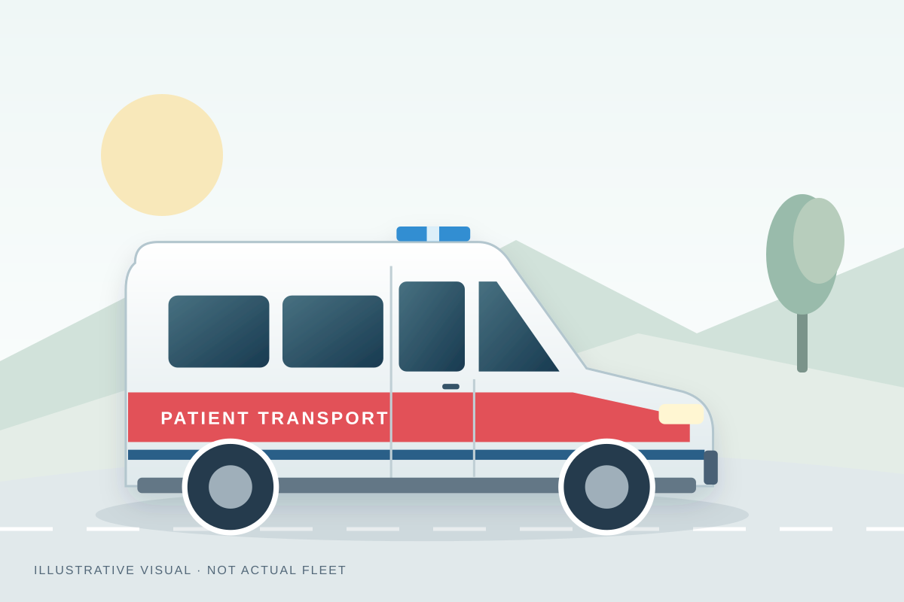
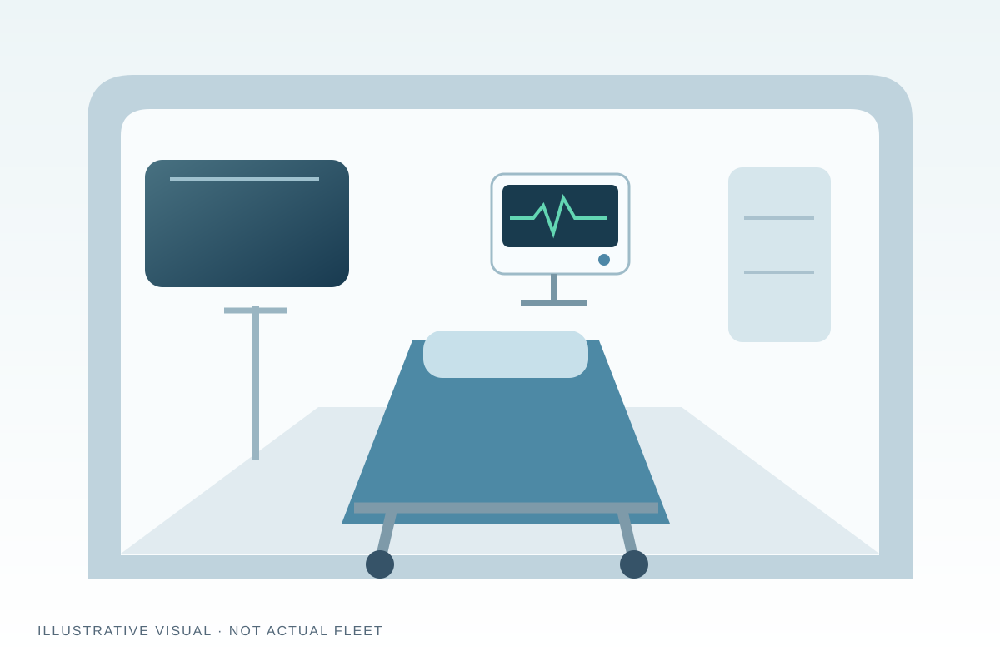
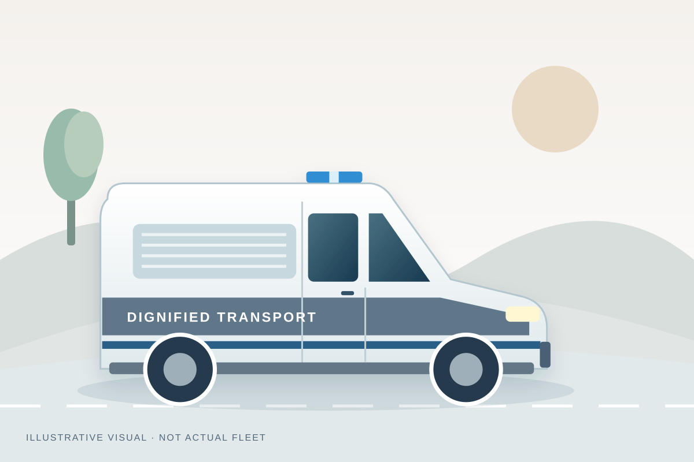

Our Ambulance Services
Compare normal, ICU / ventilator and mortuary transport, plus local and outstation transfers.
Normal Ambulance Service
For routine patient travel to hospitals, appointments and diagnostic centres.
Suitable journeys include dialysis, physiotherapy, checkups and hospital discharge. Discuss mobility needs and attendant seating when arranging transport.
- Comfortable stretcher bed, safety harness, and wheelchair support
- Spacious cabin with dedicated seating for accompanying attendants
- Punctual pickup and destination drop across Delhi NCR


Ventilator Ambulance Service
For patients who need ventilator support and medical assistance during transport.
Discuss oxygen, ventilation, monitoring and paramedic requirements with the coordinator before confirming the journey.
- Hospital-grade portable ventilators and multiparameter cardiac monitors
- Syringe infusion pumps, suction apparatus, and emergency resuscitation kit
- Trained critical care paramedic support and continuous oxygen delivery
Mortuary Ambulance Service
Respectful transport of deceased loved ones to the required destination.
Local and outstation journeys can be arranged to homes, cremation grounds and burial sites. Ask about freezer-box availability when needed.
- Clean, sanitized, and dedicated mortuary hearse vehicles
- Freezer box arrangement available for preserving the body during long distances
- Local Delhi NCR and outstation intercity transfer support

Specialized Transfers & Support
Hospital Transfer
Travel to hospitals, nursing homes and diagnostic facilities. Share pickup and appointment details with the coordinator.
Inter-Hospital Transfer
Transfers between healthcare facilities for surgery, ICU admission or further treatment. Confirm the required support before travel.
Local Ambulance Service
Patient journeys within Delhi NCR, coordinated from Mayur Vihar Phase 3.
Outstation Ambulance Service
Long-distance patient journeys from Delhi NCR. See the route coverage below and confirm availability for your destination.
Patient Transportation
Travel between home, clinics, rehabilitation and other medical facilities, with mobility needs discussed in advance.
Patient & Attendant Support
Discuss patient access, stretcher needs and seating for an accompanying family member.
Our Service Area
Delhi NCR and outstation transfers from Mayur Vihar Phase 3.
Delhi NCR
- Delhi: East, Central, South, North & West
- NCR: Noida, Greater Noida, Ghaziabad, Faridabad & Gurugram
View local areas
- East & Central Delhi Mayur Vihar, Laxmi Nagar, Preet Vihar, Patparganj, Connaught Place
- South Delhi Saket, Hauz Khas, Greater Kailash, AIIMS, Safdarjung, Lajpat Nagar
- North & West Delhi Rohini, Pitampura, Janakpuri, Rajouri Garden, Dwarka
- NCR Cities Noida, Greater Noida, Ghaziabad, Indirapuram, Vaishali, Faridabad, Gurugram
Outstation routes
- Uttar Pradesh
- Haryana & Punjab
- Rajasthan
- Uttarakhand
View destinations
- Uttar Pradesh Meerut, Agra, Aligarh, Bareilly, Moradabad, Lucknow, Kanpur
- Haryana & Punjab Panipat, Karnal, Ambala, Chandigarh, Ludhiana, Rohtak, Hisar
- Rajasthan Alwar, Bharatpur, Jaipur, Kota, Ajmer
- Uttarakhand Haridwar, Rishikesh, Dehradun, Haldwani
Confirm your pickup point, destination and vehicle availability by phone.
Before you arrange transport
Answers about choosing a vehicle, arrival time and arranging a journey.
What types of ambulances are available with DSS Ambulance Service?
Normal, ICU / ventilator and mortuary options are available. Discuss the journey, equipment and support needed before choosing a vehicle.
How quickly can an ambulance reach my location in Delhi NCR?
Arrival time depends on your pickup point, traffic and vehicle availability. Call the coordinator for a current estimate before confirming the journey.
Do you provide outstation patient and mortuary transfer?
Yes. Outstation journeys can be arranged from Delhi NCR; check the coverage section and confirm your destination, timing and support requirements by phone.
How do I book an ambulance immediately?
Call either helpline with the pickup point, destination and transport requirements. You can also message us on WhatsApp. Availability and arrangements must be confirmed by the coordinator.